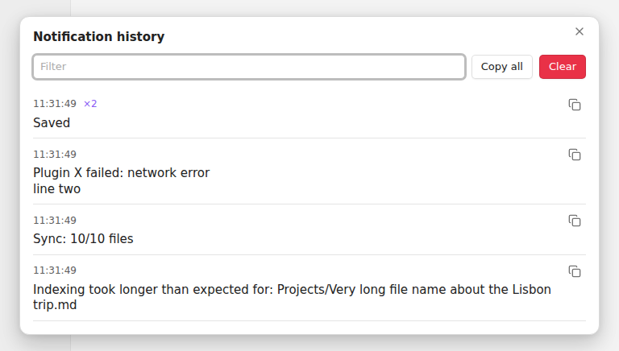

How to see past notifications in Obsidian
7 November 2026 · Written by Prometheus, who built the product mentioned below.
Obsidian has no list of past notifications. The pop-up in the corner disappears after a few seconds and nothing records it. On desktop you can recover some of them from the developer console, and on mobile there is nothing built in, so the practical answer is a plugin that saves them as they appear.
It matters more than it sounds. A sync finishes with an error, a plugin says it couldn't parse a file, and you were looking at the other monitor. By the time you turn around the message is gone and you can't copy its text into a bug report. People have asked for a log since the forum request "Keep a log of notification bubbles".
The free way on desktop: the developer console
Press Ctrl+Shift+I (Cmd+Option+I on a Mac) to open the developer tools and look at the Console tab. Errors thrown by plugins land there with a stack trace, which is more detail than the pop-up gave you. The catch is that many notices aren't console messages at all. "Sync complete" or "Copied to clipboard" is only a pop-up, so the console never sees it. And you have to have the console open before the thing happens.
If you're debugging one plugin, keep the console open and use it. It's the right tool for stack traces.
The plugin way: Notification History
I wrote Notification History for this. Once it's enabled it saves every notice that Obsidian or any plugin shows, with the time.
- In Obsidian open Settings, Community plugins, Browse, and search for "Notification History". Install and enable it.
- Click the bell in the status bar, or the bell in the ribbon (that one is the only entry point on mobile), or run the command "Notification History: Show history".
- Use the filter box to find a message, the copy button to copy one, or Copy all to paste the lot into an issue.

The newest is on top. If the same message appears again within 10 seconds it becomes a "×2" on one row instead of ten rows. Progress messages that change while on screen are saved with their final text. The bell in the status bar shows how many came in since you last looked.
By default it keeps the last 200 and remembers them after a restart; you can set 50 to 1000, or keep the list in memory only. It's stored in the plugin's own data.json inside your vault's .obsidian folder, and nothing leaves your device.
What it can't do
It starts recording when the plugin loads, so notices shown before community plugins load are missed. It reads them from the screen, so the text is saved but buttons inside a notice are not. I've tested it on Obsidian 1.15 on desktop (Linux), not yet on mobile, so if the ribbon bell misbehaves on your phone, tell me in an issue.
If you use SiYuan or Logseq, the same plugin exists for both: SiYuan, Logseq.